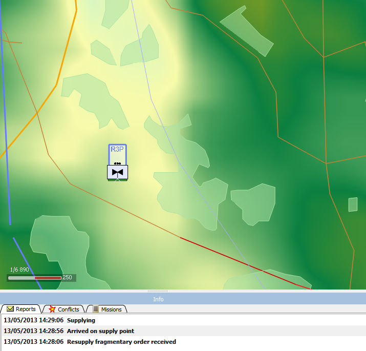
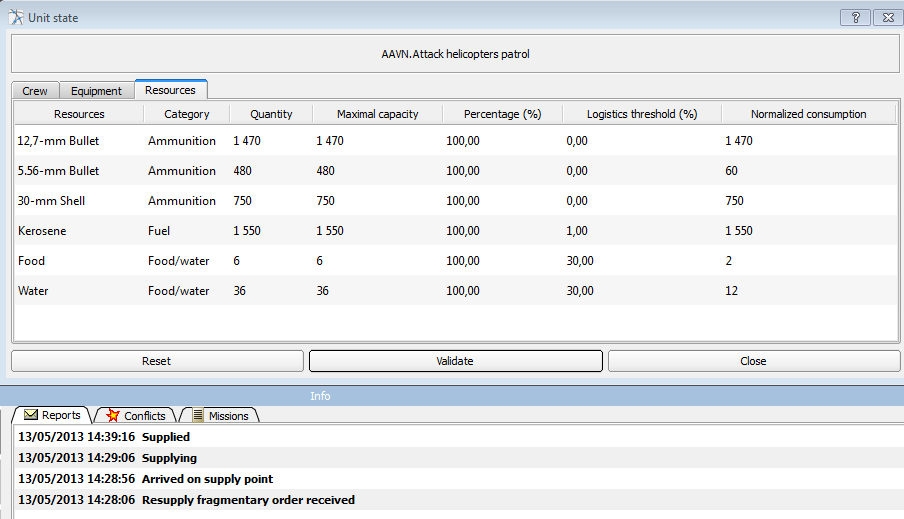

Context | "To provide with fresh supplies, as of weapons and ammunition." In SWORD, to make a flying agent go to a combat trains unit or to a supply point in order to get resources. |
Parameters |
MandatoryOptional |
Behavior |
The agent moves to the closest supply point.  The agent is resupplying.  The agent has finished its supplying. No mission range was provided, so the agent has been fully resupplied. |
Specific cases | If there is no curent mission range, then the agent uses the range of his previous mission instead. If the agent never had a mission with a range, then the agent resupplies fully all of its resources. |
Comments | |
End of mission | The fragmentary order ends once the resupply has finished. |